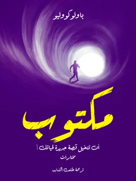

مكتوب: أن تتخيل قصة جديدة لحياتك!

قراءة عربية أصلية محددة النطاق في الصفحات [، 1 من ملف PDF المرتبط، وليست تلخيصا كاملا للكتاب. نناقش ما تدعمه هذه المقاطع فقط.
حكايات كويلو العظية
في متن «مكتوب»، بترجمة طلعت الشايب، تتتابع حكايات باولو كويلو القصيرة: رجل يتذكر القرية التي عاش فيها والرجل الذي كلمه مرة واحدة فقط وسأله مازحًا عن إيمانه، وناسك يجيب مولاه: «هذا صحيح يا مولاي، ولكنني...»، وتأمل في الإلهين: الإله الذي في السماء وذلك الذي يشاركنا حياتنا، وقول المعلم: «بداخل كل منا عمل فني مقدس». هكذا يبني كويلو نصه على الحكاية العظية القصيرة التي تفتح سؤالًا روحيًّا وتتركه معلقًا بين السماء والحياة اليومية.
زاوية وحدود القراءة
قراءة في مطلع متن الكتاب بترجمة طلعت الشايب (ص 15-17 من الملف)، ولا تدعي تلخيص حكاياته أو مقدمة المترجم.
الطبعة والقراءة
هذه النسخة من الكتاب صادرة ومتاحة مجانًا بموجب اتفاق قانوني بين مؤسسة هنداوي وأسرة السيد الأستاذ طلعت الشايب.
تنزيل PDF المجاني ↓ القراءة والمصدر الرسمي ↗